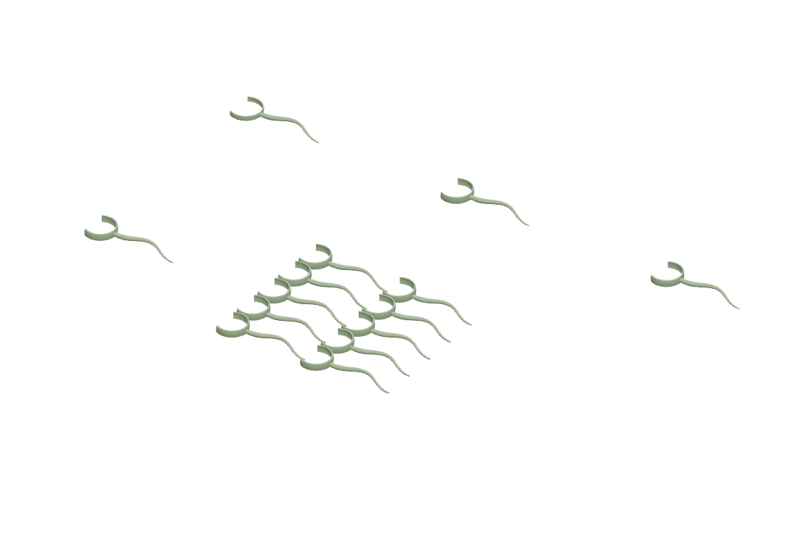
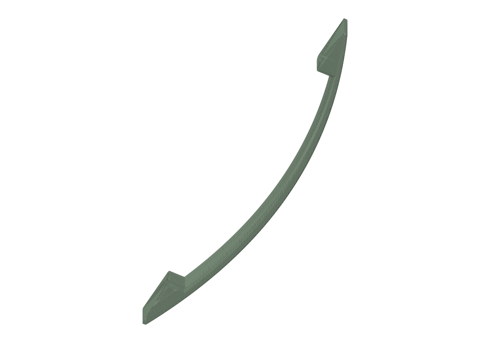

Models
16 projects

Cabinet door templates
Rail V10 · Stile V13

Sanding plane
Tapered lock

Eighth-circle stencil
1–10 inch radii

Fingernail-profile caul
250 mm · 2×4 backed

Interchangeable tote grip
Saddle + fit coupon

Closet space saver
Parametric rebuild

Closet space saver · remix
Hex-cutout remix

Gridfinity rebuilt bin
4 × 3 × 8

Jae drawer
319 × 423 mm

Tea drawer
342 × 472 mm

Small filing cabinet
235 × 375 mm candidate

UHK foot
Fit to be documented

Deckpass
V1.1

Ping-pong tail attachment
Five build plates

Long handle
Original mesh

Cardboard can
Saved project · 2026-09-27
No projects match. Try another name or category.